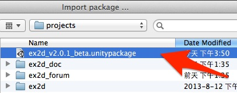

安装
这篇文档将告诉你如何将 ex2D 安装到你的项目中。
获取 .unitypackage 文件
在你下载完 zip 打包文件以后，将他解压缩到任意目录中。你应该会在解压目录中找到一个名叫 ex2d_vXXX.unitypackage 的文件。 这就是我们之后将要导入到你项目的插件包。
如果你由于未知的原因得到了不同的文件名，那是由于文件解压软件过度解压了 .unitypackage 文件。这种情况在 Mac 机器上比较常见。 如果遇到这种情况，请尝试使用 Mac 自带的 zip 解压软件或者手动解压文件，直到你得到是 .unitypackage 文件。
导入 ex2D 插件包
打开你的 Unity 项目，选择 “Assets –> Import Package –> Custom Package…"。

选择 .unitypackage 文件并点击对话框中的 Open 。

检查导入
完成上一步后，你会看到一个导入确认的窗口弹出。点击 Import 按钮确认导入的 ex2D 插件包。

确认后将会在你项目中的 Assets 里创建一个 ex2D 文件夹，并且将 ex2D 所需的文件拷入其中。
如果导入成功，你将会发现 Unity 的菜单里多出了一个 ex2D 的菜单项。

接下来，让我们通过 新手上路 简单地熟悉一下 ex2D 的工作流程。